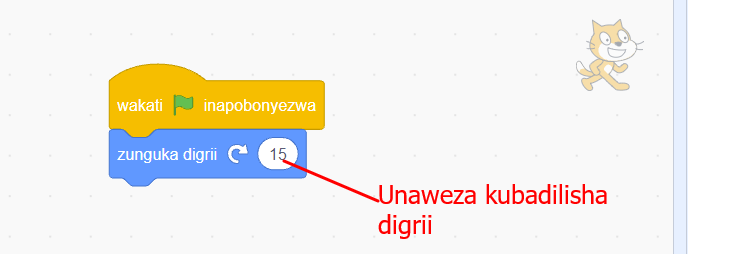
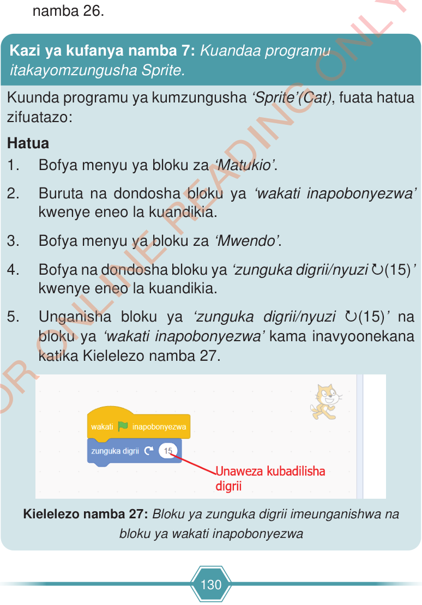

Futa neno Scratch au Quorum Project na andika jina la mchezo unaoandaa.
Chagua sehemu ya kutunzia mchezo kwa mfano ‘Desktop’
Bofya au tumia mishale kitufe cha ‘Save’ kama ilivyo kwenye Kielelezo namba 26.
Kazi ya kufanya namba 7: Kuandaa programu itakayomzungusha Sprite.
Kuunda programu ya kumzungusha ‘Sprite’ (Cat), fuata hatua zifuatazo:
Hatua
Bofya au tumia mishale menyu ya bloku za ‘Matukio’.
Buruta na dondosha bloku ya ‘wakati inapobonyezwa’ kwenye eneo la kuandikia.
Bofya au tumia mishale menyu ya bloku za ‘Mwendo’.
Bofya au tumia mishale na dondosha bloku ya ‘zunguka digrii au nyuzi ↻(15)’ kwenye eneo la kuandikia.
Unganisha bloku ya ‘zunguka digrii au nyuzi ↻(15)’ na bloku ya ‘wakati inapobonyezwa’ kama inavyoonekana katika Kielelezo namba 27.

Maelezo ya picha: Bloku ya ‘wakati bendera ya kijani inapobonyezwa’ imeunganishwa na bloku ya ‘zunguka digrii 15’. Namba ya digrii inaweza kubadilishwa.Kielelezo namba 27: bloku ya zunguka digrii iliyounganishwa na bloku ya wakati inapobonyezwa.

Maelezo ya picha: Hatua za kutengeneza programu ya kumzungusha Sprite kwenye Scratch au Quorum. Bloku za Matukio na Mwendo zimechaguliwa, kisha bloku ya ‘wakati inapobonyezwa’ imeunganishwa na bloku ya ‘zunguka digrii 15’.